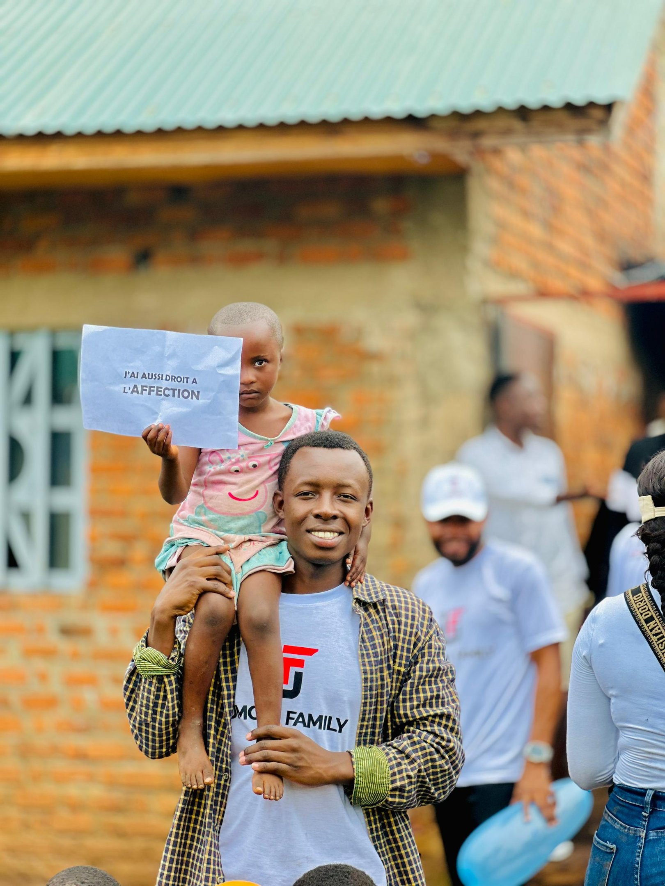

IT Consultancy & Digital Solutions
- Digital Transformation Strategies: Helping businesses modernize and innovate.
- Internet & Infrastructure Consulting: Advising on connectivity, platforms, and tools.
- Training & Capacity Building: Empowering local teams to adopt new technologies.